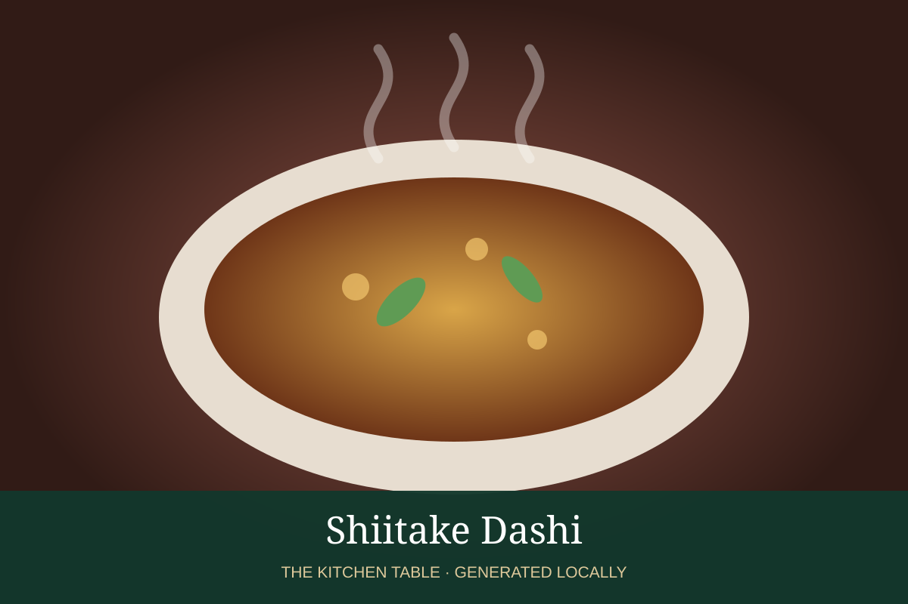

← Back to all recipes
BROTH & STOCK · JAPANESE
Shiitake Dashi
Vegan Japanese stock built from dried shiitake, optionally combined with kombu.
Broth & StockJapanese

Ingredients
- 4 cups water
- 6 dried shiitake mushrooms
- 1 piece kombu, optional
Preparation
- Rinse mushrooms quickly.
- Soak mushrooms and optional kombu in cold water 4 hours or overnight.
- Remove kombu before boiling; gently warm the mushroom infusion.
- Strain; reserve rehydrated mushrooms for another dish.